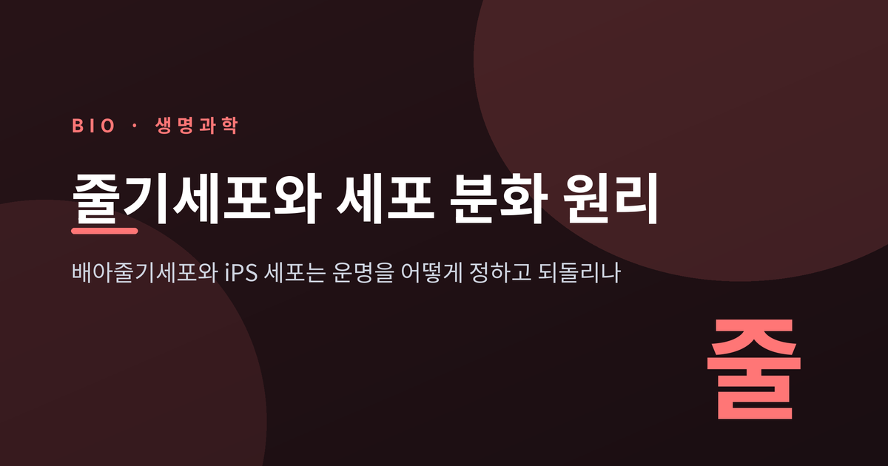
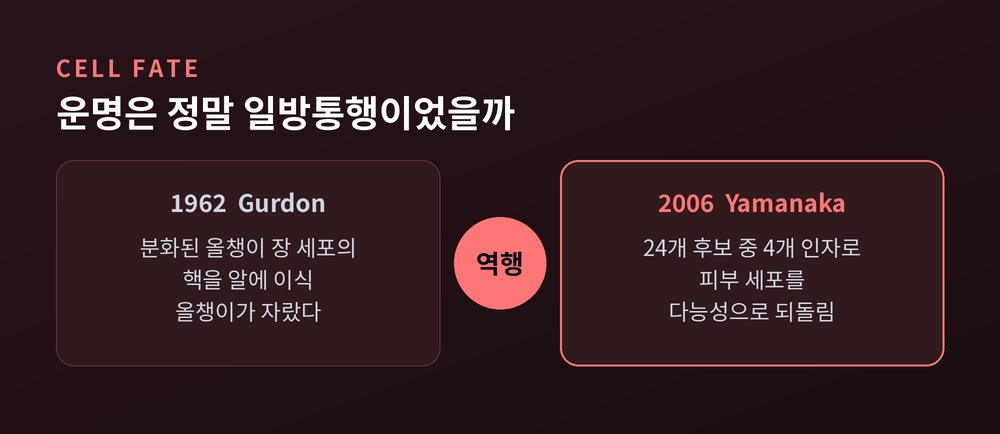
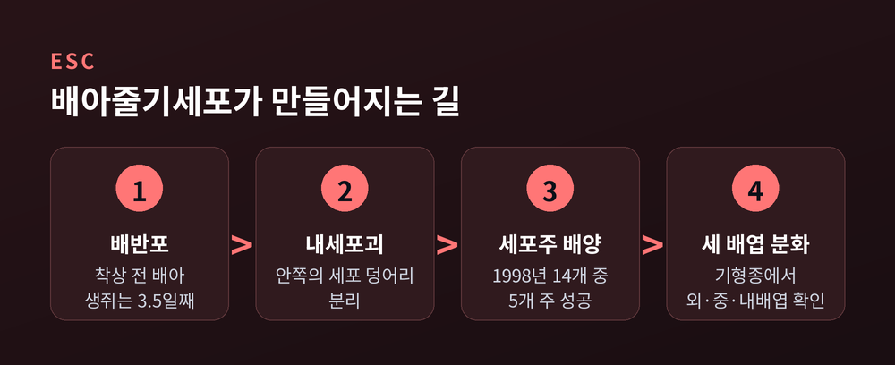
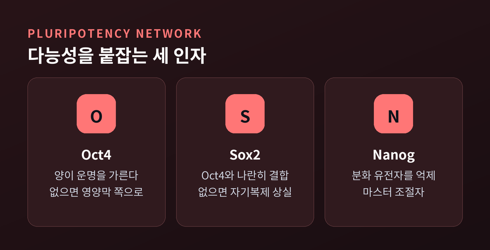
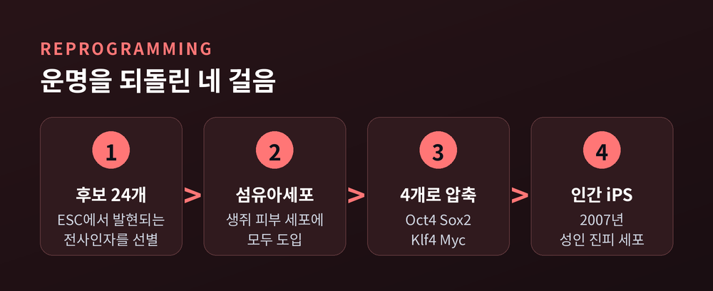
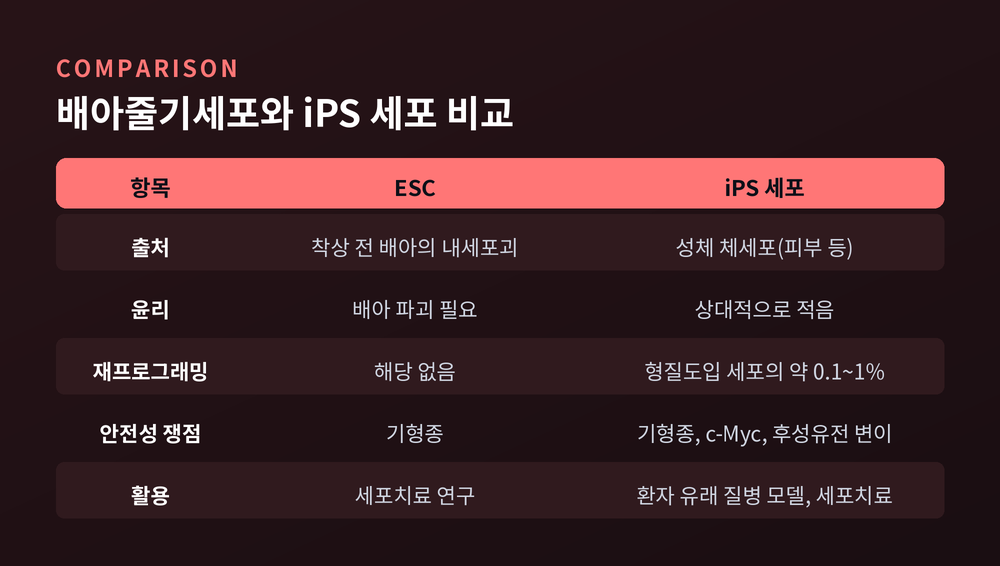

오늘은 줄기세포와 세포 분화의 원리에 대해 이야기해 보려 합니다. 배아줄기세포와 iPS 세포가 각각 어떻게 만들어지고, 세포의 운명을 어떤 방식으로 정하고 되돌리는지 차례로 정리하겠습니다.
세 줄 요약
발생학에는 오래된 비유가 하나 있습니다. Waddington의 '봉우리와 골짜기' 풍경입니다.
줄기세포는 산꼭대기에 놓인 공입니다. 공은 비탈을 따라 어느 한 골짜기로 굴러 내려갑니다. 그 골짜기가 신경세포가 되고, 피부세포가 되고, 근육세포가 됩니다. 한 번 굴러 내려간 공은 다시 올라가지 못한다고 생각했습니다.
이 믿음을 먼저 흔든 사람이 John Gurdon입니다. 1962년 그는 개구리 알의 핵을 자외선으로 없앤 뒤, 그 자리에 올챙이 장 세포에서 꺼낸 핵을 넣었습니다. 이미 장 세포로 분화를 마친 세포의 핵이었습니다.
그런데도 알은 정상적인 올챙이로 자랐습니다. 성공한 개체는 소수였습니다만, 분화된 세포의 핵에도 몸 전체를 만들 유전 정보가 고스란히 남아 있음이 확인된 것입니다. 이후 성체 유선 세포의 핵으로 복제 양 돌리가 만들어졌고(1997년 보고), 운명이 고정된 것이 아니라는 증거는 하나씩 쌓였습니다.

배아줄기세포는 착상 전 배아, 곧 배반포의 안쪽에 있는 내세포괴(inner cell mass)에서 얻습니다. 생쥐의 ESC는 1981년 교배 후 3.5일째 배반포에서 처음 분리되었습니다. 인간 ESC는 1998년에 나왔습니다.
James Thomson 연구팀은 체외수정용으로 기증된 배아에서 14개의 내세포괴를 분리했고, 그중 5개 세포주를 배양하는 데 성공했습니다. 다섯 주 모두 기형종을 만들었습니다. 기형종 안에는 장 상피(내배엽), 연골과 근육(중배엽), 신경상피(외배엽)가 뒤섞여 있었습니다.
세 배엽의 세포를 모두 만들 수 있는 능력을 다능성이라 부릅니다. 여기에 스스로를 복제하는 자기복제 능력이 더해진 것이 배아줄기세포의 정의입니다. 다만 배반포 단계의 세포는 다능성이지, 개체 전체를 만드는 전능성은 아닙니다.
한계도 분명합니다. ESC를 얻으려면 배아를 파괴해야 합니다. 윤리 논쟁이 끊이지 않는 이유입니다.

세포는 어떻게 다능성 상태에 머물러 있을까요. 핵심은 Oct4, Sox2, Nanog라는 세 전사인자입니다.
세 인자는 생쥐와 인간 ESC에서 같은 조절 부위, 그것도 서로 가까운 자리에 자주 함께 붙습니다. 서로의 발현을 조절하는 회로를 이루어, 자기복제를 유지하고 분화 유전자를 눌러 둡니다.
재미있는 것은 '양'이 운명을 가른다는 점입니다. Oct4가 사라지면 세포는 영양막 계통으로 기울고, 지나치게 많아지면 원시내배엽과 중배엽 쪽으로 분화합니다. 다능성은 스위치를 켜고 끄는 문제가 아니라 눈금을 맞추는 문제에 가깝습니다.
염색질 수준의 장치도 있습니다. ESC의 발생 조절 유전자에는 활성 표지(H3K4me3)와 억제 표지(H3K27me3)가 함께 붙어 있습니다. 이른바 이분(bivalent) 염색질입니다. 언제든 출발할 수 있지만 아직 출발하지 않은, 대기 상태의 유전자입니다.
외부 신호는 종마다 다릅니다. 생쥐 ESC는 LIF와 BMP4로 유지됩니다. 인간 ESC는 LIF가 필요 없고 Activin/Nodal과 FGF2에 의존합니다. BMP4는 생쥐에서는 다능성을 돕지만 인간 ESC에서는 오히려 분화를 부릅니다.

2006년 Shinya Yamanaka는 질문을 뒤집었습니다. 분화된 세포에 배아줄기세포의 인자를 넣으면 어떻게 될까.
그는 ESC에서 발현되는 후보 전사인자 24개를 골라 생쥐 피부 섬유아세포에 모두 넣었습니다. 일부 세포의 모양이 바뀌었습니다. 둥글게 부풀고 핵이 커졌습니다. 후보를 하나씩 덜어 내며 좁혀 간 끝에 남은 것은 Oct3/4, Sox2, Klf4, Myc, 네 가지였습니다.
한 가지 인자만으로는 클론이 하나도 생기지 않았습니다. 네 인자가 함께 있어야 했습니다.
초기 결과는 아쉬운 데가 있었습니다. Fbx15 유전자를 표지로 골랐던 첫 세포는 불완전해서, 배반포에 넣으면 배아가 임신 중기를 넘기지 못했습니다. 2007년 세 연구팀이 Nanog 또는 Oct4 발현으로 더 엄격하게 선별하자 ESC와 기능적으로 동등한 세포가 얻어졌고, 살아 있는 키메라와 생식계 전달까지 확인되었습니다.
같은 해 사람의 세포로도 성공했습니다. 36세 여성의 진피 섬유아세포에 같은 네 인자를 넣자, 형태와 유전자 발현, 텔로머라아제 활성이 인간 ESC와 일치하는 세포가 만들어졌습니다. 신경세포와 심근세포로도 분화했습니다. Thomson 연구실은 Lin28, Nanog, Oct4, Sox2라는 다른 조합으로 같은 결과에 도달했습니다.
2012년 노벨 생리의학상은 Gurdon과 Yamanaka에게 돌아갔습니다. 골짜기로 굴러 내린 공이 다시 산꼭대기로 올라올 수 있다는 것이 증명된 셈입니다.

운명을 되돌리는 일이 쉬웠던 것은 아닙니다. 효율부터 낮습니다. 인자를 넣은 세포 가운데 실제로 iPS 세포가 되는 것은 대략 0.1~1% 수준으로 보고됩니다.
세포가 저항하는 이유도 알려져 있습니다. p53과 p21 경로가 세포사멸이나 노화를 유도해 재프로그래밍을 막습니다. 체세포 시절의 DNA 메틸화가 완전히 지워지지 않으면 후성유전적 '기억'이 남습니다. 다능성 유전자 주변의 H3K9me3 이질염색질도 장벽이 됩니다.
이 저항을 낮추는 방법이 여럿 연구되었습니다. 비타민 C는 탈메틸화를 돕고, 저산소 조건도 도움이 되며, Mbd3를 제거하면 7일 안에 거의 100%에 이르렀다는 보고가 있습니다. 다만 마지막 수치는 하나의 리뷰가 전하는 결과여서 아직 조심스럽게 볼 필요가 있습니다.
도입 방식도 진화했습니다. 처음에는 레트로바이러스로 유전자를 끼워 넣었으나, 삽입 돌연변이 위험이 있었습니다. 지금은 게놈에 들어가지 않는 센다이 바이러스나 에피솜 플라스미드가 쓰입니다. 2022년에는 유전자 없이 화학물질만으로 인간 섬유아세포를 iPS 세포로 바꾸는 데도 성공했습니다.
안전성은 가장 무거운 숙제입니다. c-Myc는 잘 알려진 발암 유전자입니다. 초기 연구에서는 F1 생쥐의 약 20%가 c-Myc 재활성으로 추정되는 목 부위 암을 앓았습니다. c-Myc를 빼면 효율이 떨어지는 대신 종양 위험은 줄일 수 있습니다. 분화가 끝나지 않고 남은 미분화 세포가 기형종을 만들 위험도 계속 지적됩니다.
두 세포는 같은 다능성을 향하지만 출발점이 다릅니다.
ESC는 배아에서, iPS 세포는 환자 자신의 피부 같은 체세포에서 얻습니다. 그래서 iPS 세포는 배아를 파괴하지 않고, 환자 유래 세포로 병을 재현하는 데도 쓸 수 있습니다. ALS, 레트증후군, 긴 QT 증후군 같은 질환의 세포 모델이 이미 약물 스크리닝에 쓰입니다.
반대로 iPS 세포는 기형종이 더 빠르고 효율적으로 생긴다는 보고가 있고, 재프로그래밍 과정에서 후성유전 변이가 생길 수 있습니다. 어느 쪽이 우월하다고 잘라 말하기는 어렵습니다.

2025년 4월 교토대 연구팀은 iPS 세포 유래 도파민 신경전구세포를 파킨슨병 환자에게 이식한 1/2상 결과를 Nature에 발표했습니다.
대상은 50~69세 환자 7명이었고, 6명이 효능 평가를 마쳤습니다. 양쪽 피각에 이식하고 24개월을 지켜보았습니다. 입원이 필요한 중대한 이상반응은 없었고, MRI에서 종양이나 이식편 과성장도 관찰되지 않았습니다. 운동 증상 점수(MDS-UPDRS Part III OFF)는 6명 중 4명에서 개선되었고, 평균 개선폭은 9.5점(20.4%)이었습니다. 도파민 신경 활성을 보는 PET 섭취량은 고용량군에서 63.5% 늘었습니다.
표본이 7명에 불과하다는 점은 염두에 두어야 합니다. 그럼에도 결과는 의미가 컸습니다. 2026년 3월 6일, 일본에서 이 세포를 이용한 제품 AMCHEPRY(raguneprocel)가 조건부·기한부 승인을 받았습니다. 기존 약물에 반응이 충분하지 않은 파킨슨병 환자의 운동 증상 개선이 적응증입니다.
승인은 '조건부'입니다. 시판 후 임상연구와 조사를 거쳐 정해진 기한 안에 정식 승인을 받아야 합니다. 장기 효과는 아직 확인해야 할 몫으로 남아 있습니다.
정리하면 이렇습니다.
배아줄기세포는 세포가 어디까지 열려 있을 수 있는지를 보여 주었고, iPS 세포는 그 문을 다시 열 수 있음을 보여 주었습니다. 세 개의 전사인자가 다능성을 붙잡고, 네 개의 인자가 그 상태를 되살립니다.
"운명은 정해진 것이 아니라, 유지되는 것이다."
굴러 내려간 공을 다시 산꼭대기로 올려놓을 수 있게 되었으니, 이제 남은 질문은 그 공을 어디로 다시 굴려 보낼 것인가입니다.